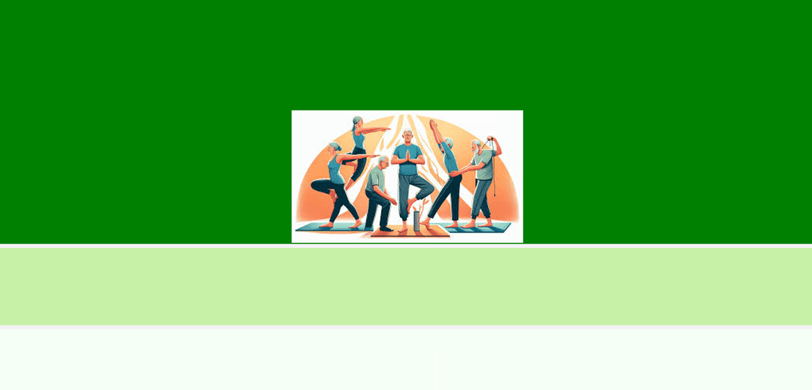
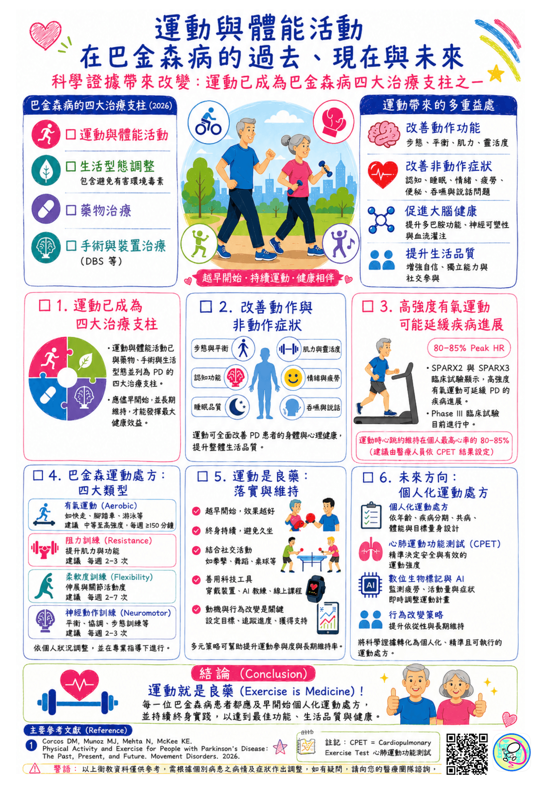
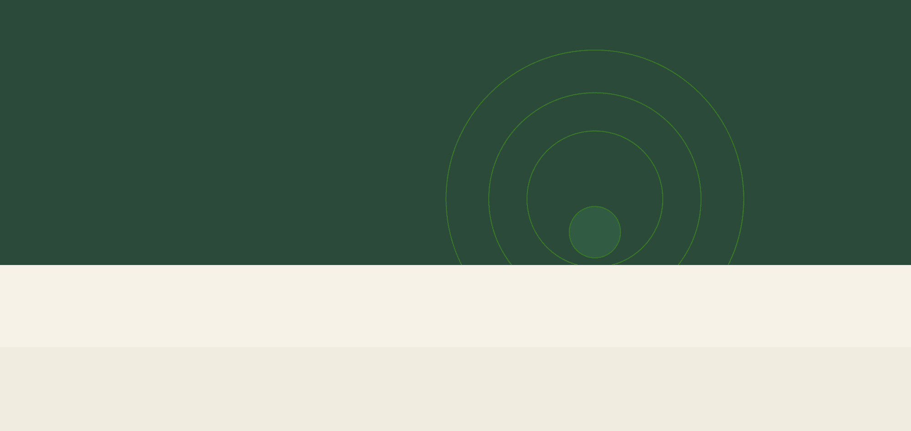

LEARN & LIVE WELL
從六個主題開始
循序認識巴金森氏症，與醫療團隊討論適合自己的照護。
FROM OUR COMMUNITY
最新文章

動起來，改寫巴金森氏病的未來
巴金森病的陪伴！社交心理支持的重要性！！！

運動與體能活動 在巴金森病的過去、現在與未來
2026高雄市運動資源介紹

聰動小團體--正念初級班
腸道順心~森活開心
保留原始繁體中文文章與活動紀錄；部分頁面為摘要或待補資料。
STORIES & CONNECTIONS
聰動影音
從原始影片與文章延伸學習，依自己的步調觀看。
以非營利協會的服務精神，連結病友、家屬與照護資源。本站新增知識附上可查閱的來源；尚未經協會醫療團隊逐題審閱。
保留的協會介紹 →